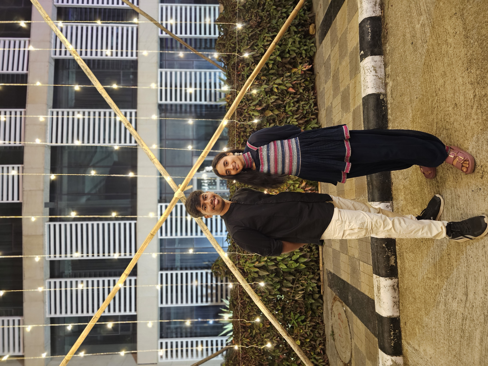

us, way back when
once upon a time
The day we met
Neither of us remembers it being a big moment — until we look back and realize it was the start of one of the best parts of both our lives.
📍 somewhere completely ordinary
your galaxy is turning one year brighter ✦
Neither of us remembers it being a big moment — until we look back and realize it was the start of one of the best parts of both our lives.

The one with the terrible plan, the worse weather, and somehow still the best time. We don't even need to say which one — we both already know.

The ones that were supposed to be five minutes and turned into two hours. Still my favorite kind of conversation, every single time.

And somehow you just keep getting more you — more brilliant, more ridiculous, more exactly the person this world needed. Happy almost-birthday.